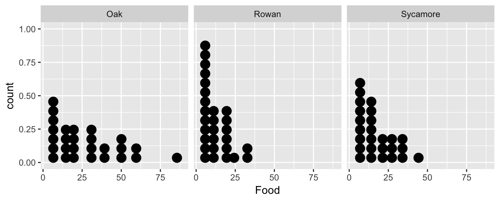
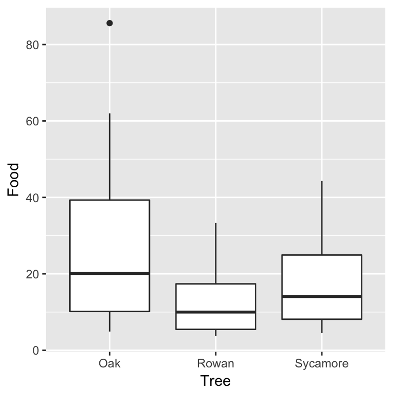
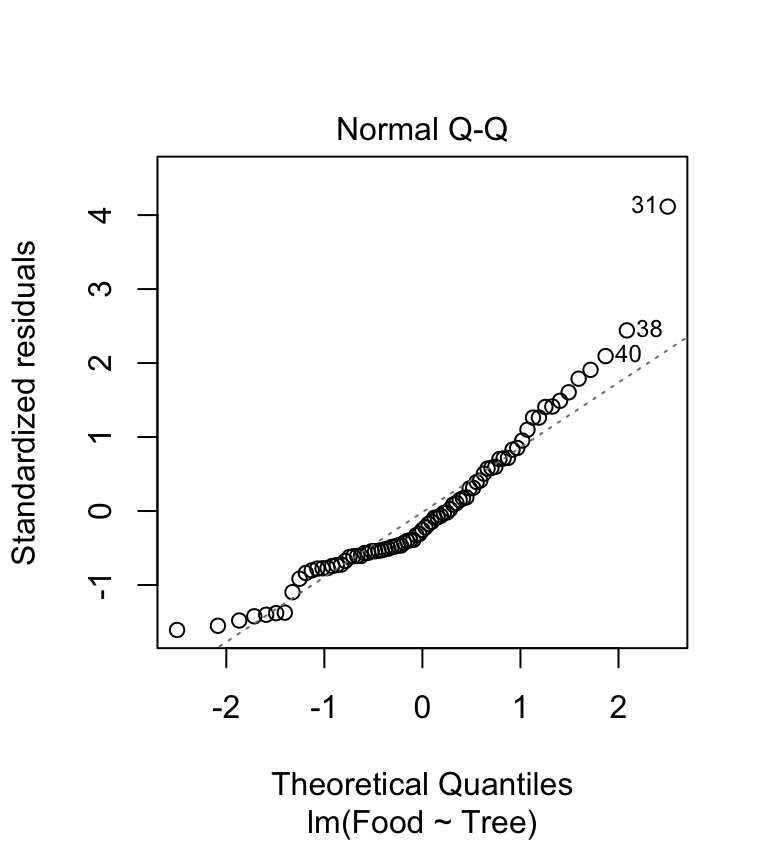
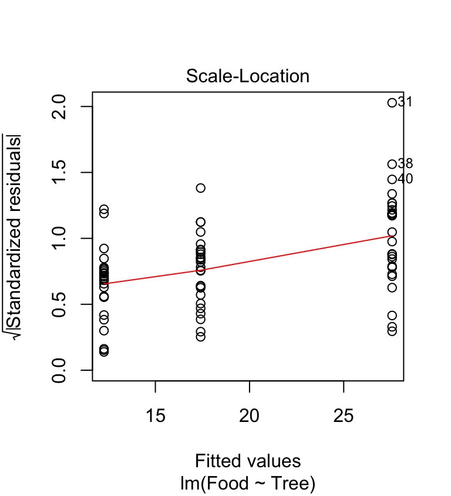
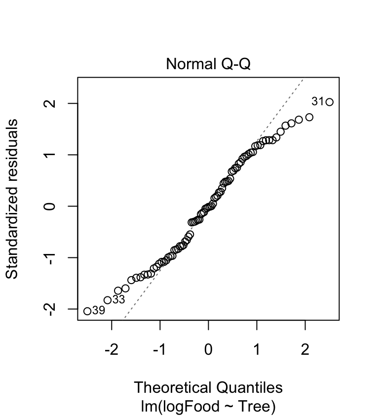
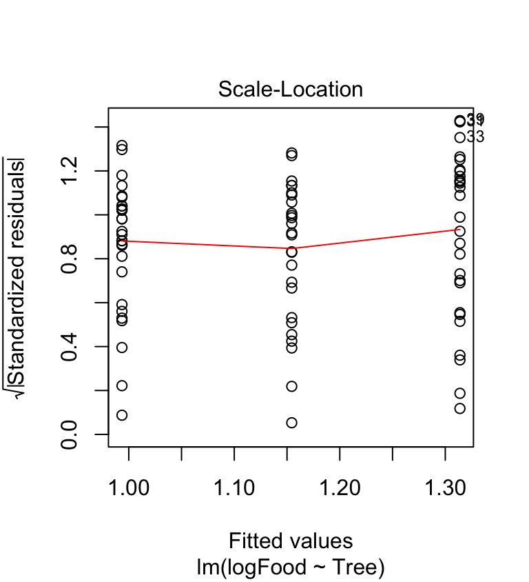

Chapter 24 Data transformations
24.1 Data that violate ANOVA assumptions
Up until now, the data we’ve examined have conformed, at least roughly, to the assumptions of the statistical models we’ve been studying. This is all very handy, but perhaps a little unrealistic. The real world being the messy place it is, biological data often don’t conform to the distributional assumptions of t-tests and ANOVA:
The residuals may not be normally distributed.
Variances may be unequal among groups.
The same kinds of problems with these distributional assumptions can also arise when working in a regression (i.e. non-normal residuals, non-constant variance). Furthermore, we might run into additional problems if there is some kind of non-linearity in the relationship between the response and predictor (numeric) variables.
Most biological data are unlikely to conform perfectly to all the assumptions, but experience has shown (fortunately) that t-tests, ANOVAs and regressions are generally quite robust—they perform reasonably well with data that deviate to some extent from the assumptions of the tests. However, in some cases residuals are clearly very far from normal, or variances change a lot across groups.
In these cases steps may need to be taken to deal with the problem. This chapter deals with one way of tackling the analysis of data that don’t fit the assumptions: data transformation. We will mostly focus on ANOVA / t-test setting, but keep in mind that the ideas are equally applicable to regression analysis.
24.2 Data transformation: ANOVAs and t-tests
24.2.1 The data—foraging in ants
Red wood ants, Formica rufa, forage for food (mainly insects and ‘honeydew’ produced by aphids) both on the ground and in the canopies of trees. Rowan, oak and sycamore support very different communities of insect herbivores (including aphids) and it would be interesting to know whether the foraging efficiency of ant colonies is affected by the type of trees available to them. As part of an investigation of the foraging of Formica rufa observations were made of the prey being carried by ants down trunks of rowan, oak and sycamore trees. The total biomass of prey being transported was measured over a 30 minute sampling period and the data were expressed as the biomass (dry weight in mg) of prey divided by the total number of ants leaving the tree to give the rate of food collection per ant per half hour. Observations were made on 28 rowan, 26 sycamore, and 27 oak trees.
Walk through
Work through the ants example.
The data are the file ANTS1.CSV. The Tree variable contains the tree identities and the Food variable contains the food collection rates:
ants <- read_csv("ANTS1.CSV")glimpse(ants)## Rows: 81
## Columns: 2
## $ Food <dbl> 11.9, 33.3, 4.6, 5.5, 6.2, 11.0, 24.3, 20.7, 5.7, 12.6, 10.2, 4.…
## $ Tree <chr> "Rowan", "Rowan", "Rowan", "Rowan", "Rowan", "Rowan", "Rowan", "…Let’s examine the data. We could make a dot plot…
ggplot(ants, aes(x = Food)) +
geom_dotplot(binwidth = 6) + facet_wrap(~ Tree)
…or we could construct a box and whiskers plot:
ggplot(ants, aes(x = Tree, y = Food)) +
geom_boxplot()
It doesn’t matter which plot we use. They tell the same story. The food collection rate is generally highest in Oaks and lowest in Rowans (Sycamores are in between). Notice too that the sample distribution of food collection rate is right-skewed. The test we are most likely to want to use with these data is an ANOVA, i.e. we want to assess whether the mean food collection rates are different among the three tree species. Already we have an indication that an ANOVA with the raw food values may be problematic.
24.2.2 Fit the model and checking the assumptions
This chapter is about fixing models when the assumptions are not satisfied. What assumptions do we need to check? The test we are most likely to want to use with these data is an ANOVA, so the following assumptions must be evaluated:
Independence. The experimental units of the data must be independent.
Measurement scale. The response variable is measured on an interval or ratio scale.
Normality. The residuals are normally distributed in each level of the grouping factor.
Equal variance. The variance in each level of the grouping factor is the same.
We’ll have to assume the first assumption is satisfied and the food collection rate (second assumption) is obviously measured on a ratio scale. The distributional assumptions (normality and equality of variance) are the ones we can address with a transformation. Let’s fit the ANOVA model and produce regression diagnostics to evaluate these—remember, we make these kinds of plots after we have fitted a statistical model:
ant_mod <- lm(Food ~ Tree, data = ants)We need to produce a ‘normal probability plot’ to assess the normality assumption:
plot(ant_mod, which = 2)
This plot exhibits the accelerating curvature that is indicative of right-skewed residuals. This probably isn’t just sampling variation because there is a systematic departure from the dashed line everywhere along it. So… it looks like there is a problem. This sort of pattern is quite common in biological data, especially when it involves counts. Clearly we might be a bit worried about using an ANOVA with these data since it assumes the residuals to be at least approximately normally distributed.
Are the variances significantly different? Look at the box plots above. The data from the three samples seem to have rather different scatter. The sample from the rowan has less variation than that from the sycamore, and the sycamore has less variation than the oak. Does the scale-location plot tell the same story?
plot(ant_mod, which = 3) This shows that the variance increases with the fitted values—it looks like there is also a problem with the constant variance assumption. Again, this pattern is very common in biological data.
In the light of these evaluations, we have three options …
To carry on and carry out an ANOVA anyway—hoping that the violation of the assumptions won’t matter too much.
To try and transform the data in some way to make it fit the assumptions better, then carry out an ANOVA.
To use a different sort of test which doesn’t require the data to conform to these assumptions. Such tests are known as nonparametric tests.
We will consider the first two options below, and return to the third in the Non-parametric tests chapter.
24.3 Carrying on anyway
Carrying on and performing an analysis anyway doesn’t sound like a very good idea if we’ve already decided that the assumptions are suspect, but don’t dismiss it straight away. Mild departures from the assumptions often do not make a huge difference to the results of ANOVA (i.e. the p-values). At the very least, it can be instructive to carry out an analysis without ‘fixing’ the apparent problems so that we can get a sense of whether they matter or not.
We already fitted the ANOVA model to allow us to make the diagnostic plots. All we have to do is pass the model object to the anova function to get the F-ratio and p-value for the tree effects:
anova(ant_mod)## Analysis of Variance Table
##
## Response: Food
## Df Sum Sq Mean Sq F value Pr(>F)
## Tree 2 3317.1 1658.53 8.0305 0.0006741 ***
## Residuals 78 16109.2 206.53
## ---
## Signif. codes: 0 '***' 0.001 '**' 0.01 '*' 0.05 '.' 0.1 ' ' 1Based on these results, it looks like there is a highly significant difference in food collection rates across the three tree species. We know the data are problematic though, so the question is, does this result stand up when we deal with these problems?
t-tests are robust
The ‘carry on anyway’ strategy can often be justified if we just need to compare the sample means of two groups because in this situation we can use a two-sample t-test rather than an ANOVA. By default R uses a version of the t-test that allows for unequal sample variances. This at least deals with one potential problem. The t-test is also fairly robust to violations of the normality assumption when the sample sizes are small, and when the sample sizes are large, the normality assumption matters even less.
The ability to do a t-test which doesn’t require equal variances is extremely useful. A word of warning though: some people advise carrying out a statistical test of equal variance, and if the variances are deemed not to be significantly different, using the version of a two-sample t-test that assumes equal variances. This is not good advice. Following this procedure leads to less reliable p-values. The reason for this effect is somewhat technical, but trust us, this procedure is not good statistical practise.
24.4 Transforming the data
One approach to dealing with difficult data is to apply a mathematical function to it to make the transformed data fits the model assumptions better: a process called data transformation. This may sound a bit dubious, but it is a perfectly valid procedure that will often allow us to use the statistical model we want to even if the data don’t initially fit the assumptions. The key thing to keep in mind is that the transformation should be applied to the response variable.
24.4.1 The logarithmic transformation
Let’s try a simple transformation on the food collection rate variable in the ant data set. Instead of using the original numbers we will convert them to their logarithms. We can use common logs (logs to the base 10, written log\(_{10}\)) or natural logs (logs to the base, written log\(_{e}\) or ln). It doesn’t matter: they have exactly the same effect on the data in terms of making it meet the assumptions of ANOVA (or not).
Applying a log transform is quick and easy in R—there are built in functions to take common logs and natural logs, called log10 and log, respectively. We’ll use mutate to add a new variable, which is the common log of Food:
ants <- mutate(ants, logFood = log10(Food))We stored the transformed variable in a new column called logFood.
ant_mod_log <- lm(logFood ~ Tree, data = ants)We need to produce a ‘normal probability plot’ to assess the normality assumption:
plot(ant_mod_log, which = 2) The accelerating curvature (indicative of right-skewed residuals) has gone. The new normal probability plot is a bit better than before as now perhaps 60% of the cases are on the dashed line. It’s hardly perfect though—the tails of the distribution are not where we’d like them to be. What about the variances?
plot(ant_mod_log, which = 3) The scale location-plot indicates that the constant variance assumption is now OK, i.e. the variance no longer increases with the fitted values. It looks like the log transformation seems to to have improved things quite a lot, but the diagnostics are still not perfect.
The assumptions are closer to being satisfied. Let’s carry out ANOVA again using the model with the transformed food variable to see how the results change:
anova(ant_mod_log)## Analysis of Variance Table
##
## Response: logFood
## Df Sum Sq Mean Sq F value Pr(>F)
## Tree 2 1.4106 0.70530 7.2867 0.001255 **
## Residuals 78 7.5498 0.09679
## ---
## Signif. codes: 0 '***' 0.001 '**' 0.01 '*' 0.05 '.' 0.1 ' ' 1What has happened? We still see evidence for a significant effect of tree (p<0.01) with the transformed data, but the p-value is somewhat bigger than when we used the original data. This illustrates why it is important to evaluate assumptions, and to deal with them when they are obviously violated—the output of a statistical test is affected. It did not matter too much here, but in other settings we can end up with misleading or downright spurious results if we ignore problems with the assumptions of a statistical model.
Values of 0
One thing to be aware of is that we cannot take the log of zero. If our data contain zeros we have add a small value (conventionally 1) to the variable before taking the logs (so the transformation is actually \(log(x+1)\)). It is worth tying this —it’s easy to do and occasionally works well—but don’t be surprised if this transformation results in a model with poor diagnostics. The \(log(x+1)\) transformation often doesn’t work when there are many zeros. Sadly, dealing with ‘non-normal’ data containing many zeros is tricky.
24.4.2 Presenting results from analyses of transformed data
Having compared the transformed means, how should we present the results in a report? There are three alternatives. We’ll illustrate them using the log-transformation, but they applicable to other kinds of transformations.
We could present the transformed means (having stated what the transformation was, e.g. \(log_{e}(x+1)\)). The disadvantage to this is that the numbers themselves convey little information about the data values on the original scale. This isn’t always a problem. For example, effects given on a log scale act in a ‘multiplicative’ manner, so a model with log-transformed response variable can still be interpreted if we know what we’re doing.
We could back-transform the means of the log-transformed data by taking the antilogs: \(10^{x}\) (for logs to the base 10) and \(e^{x}\) (for natural logs)22. When we back-transform data, however, we need to be aware of two things: (1) The back-transformed mean will not be the same as a mean calculated from the original data; (2) We have to be careful when we back-transform standard errors. If we want to display the back-transformed means on a bar plot, with some indication of the variability of the data, we must calculate the standard errors and then back transform the upper and lower limits, which will not then be symmetrical about the mean.
We could also present the means calculated from the original data but state clearly that the statistical analysis was carried out on transformed data. This is often the simplest way to proceed.
24.5 Types of transformations
Clearly, in the case study above, a log-transformation alters the outcome of statistical tests applied to the data. It is not always the case that transforming the data will make the difference between a result being significant and not significant, or that the transformed data will give a less significant result.
Never use p-values to judge the success of a transformation! We use diagnostic plots to make that assessment. What we hope is that we can transform the response variable so that it conforms, at least approximately, to the assumptions of the statistical model we want to use, making the result from associated tests as reliable as possible.
Taking logarithms is only one of many possible transformations. Each type of transformation is appropriate to solving different problems in the data. The following is a summary of the three most commonly used transformations and the sort of situations they are useful for.
24.5.1 Logarithms
Log transformation, as we’ve just seen, affects the data in two ways:
A log-transformation stretches out the left hand side (smaller values) of the distribution and squashes in the right hand side (larger values). This is obviously useful where the data set has a long tail to the right as in the example above.
The ‘squashing’ effect of a log-transformation is more pronounced at higher values. This means a log-transformation may also deal with another common problem in biological data (also seen in the ant data)—samples with larger means having larger variances.
If we are carrying out an ANOVA and the scale-location plot exhibits a positive relationship—i.e. groups with larger means have larger variances—then a log transformation could be appropriate23.
24.5.2 Square roots
Taking the square root of the data is often appropriate where the data are whole number counts (though the log transformation may also work here). This typically occurs where your data are counts of organisms (e.g. algal cells in fields of view under a microscope). The corresponding back-transformation is obviously \(x^{2}\).
In R the square root of a set of data can be taken using the sqrt function. However, note that there is no square function in the list. Taking squares is done using the ^ operator with the number 2 on the right (e.g. if the variable is called x, use x^2).
24.5.3 Arcsine square root
This transformation is generally used where the data are in the form of percentages or proportions. It can be shown in theory (even if not from the data you actually have) that such data are unlikely to be normally distributed. A correction for this effect is to take the inverse sine of the square roots of the original data, i.e. \(\arcsin \sqrt{x}\).
Converting percentages to proportions
Although this transformation is usually discussed in the context of percentages we cannot actually take the arcsine of numbers larger than 1. Obviously percentages range between 0 and 100. To get round this, when dealing with percentage data, simply express the percentages as proportions (e.g. 100% = 1, 20% = 0.2, 2% = 0.02, etc.) before doing the transformation.
In R the transformation can be achieved by combining the sqrt and asin functions inside mutate. For example, if we need to transform a proportion stored in the x variable use something like…
mydata <- mutate(mydata, assqrt.x = asin(sqrt(x)))…where mydata is the name of hypothetical data frame containing the data. Just remember to apply sqrt and asin in the correct order. We used nested functions here, which are applied from the inside to the outside.
24.5.4 Squaring
In addition to the standard transformations above there are a variety of others less commonly used. One problem which the above transformations don’t deal with is when data have a negative skew (i.e. a long tail to the left).
This problem can sometimes be dealt with, or at least reduced, by squaring the data values. In R the transformation can be achieved by combining the ^ operator inside mutate. For example, we might use something like…
mydata <- mutate(mydata, sqr.x = x^2)…where mydata is again the name of hypothetical data frame containing the data.
24.5.5 Situations which cannot be dealt with by transformations
There are some situations where no amount of transformation of the data will get round the fact that the data are problematic. Three in particular are worth noting…
Multimodal distributions: these may in fact have only one actual mode, but nonetheless have two or more clear ‘peaks’ (N.B. not to be confused with distributions that are ‘spiky’ just because there are few data).
Dissimilar distribution shapes: if the two (or more) samples have very different problems, e.g. one is strongly right-skewed and the other strongly left-skewed then no single transformation will be able to help—whatever corrects one sample will distort the other.
Samples with many exactly equal values: with results that are small integer numbers (e.g. counts of numbers of eggs in birds’ nests) then there will be many identical values. If the non-normality results from lots of identical values forming a particular peak, for example, this cannot be corrected by transformation since equal values will still be equal even when transformed.
Is it ‘fiddling’ the data?
Changing the data by transformation can alter the results of a statistical test—so isn’t this a bit dodgy? The key thing here is to realise that the scales on which we measure things are, to some extent, arbitrary. Transforming data to a different scale replaces one arbitrary scale with another. The transformations we have discussed don’t alter the ordering of data points relative to each other—they only alter the size of the gaps between them. In some cases this rescaling can make the data more amenable to study, analysis or interpretation.
In fact we often use data transformations, perhaps without realising it, in many situations other than doing statistical tests. For example, when we look at a set of pH readings we are already working with data on a log scale because pH units (0-14) are actually the negative logarithms of the hydrogen ion concentration in the water. Similarly measurements of noise in decibels (dB), and seismic disturbance on the Richter scale, are actually logarithmic scales.
In fact, there are subtle ways in which using a transformation can affect what aspect of the biological system it is our measurements are characterising but this is an issue beyond the scope of this course. We’ll already mentioned one example: a logarithmic transformation turns a ‘multiplicative’ process into an ‘additive’ one.
One final comment… Obviously we have to apply the same transformation to all the data, e.g. we can’t log transform the observations in one group and leave the other alone—that really would be cheating!
24.6 What about other kinds of models?
We have focussed on ANOVA here for the simple reason that the assumptions are a bit easier to evaluate compared to regression. However, exactly the same ideas apply when working with other kinds of models that lm can fit. The workflow is the same in every case:
Always check the diagnostic plots after we fit a regression or ANOVA (and do this before worrying about p-values).
If there is evidence for a problem with the assumptions, try transforming the response variable.
Refit the model using the transformed variable and generate new diagnostic plots to see if the new model is any better.
Finally, keep in mind that this is often an iterative process. We might have to go through several rounds of transforming and model checking before we arrive at a good model.
24.7 Final thoughts
Evaluating assumptions and picking transformations is as much ‘art’ as science. It takes time and experience to learn how to do it. R makes it very easy to try out different options, so don’t be afraid to do this. Frequently, with real biological data, no straightforward transformation really improves the form of the data or in correcting one problem you generate another. Fortunately, in many cases where the assumptions of a test are not reasonably well fulfilled, there is an alternative approach— which we will discuss in the Non-parametric tests chapter.